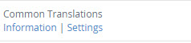
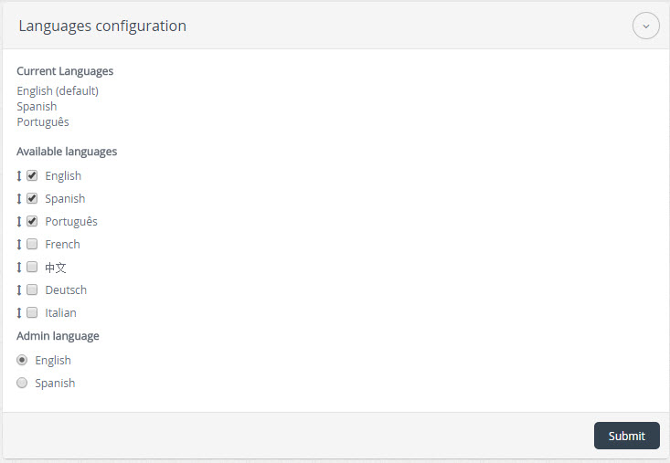
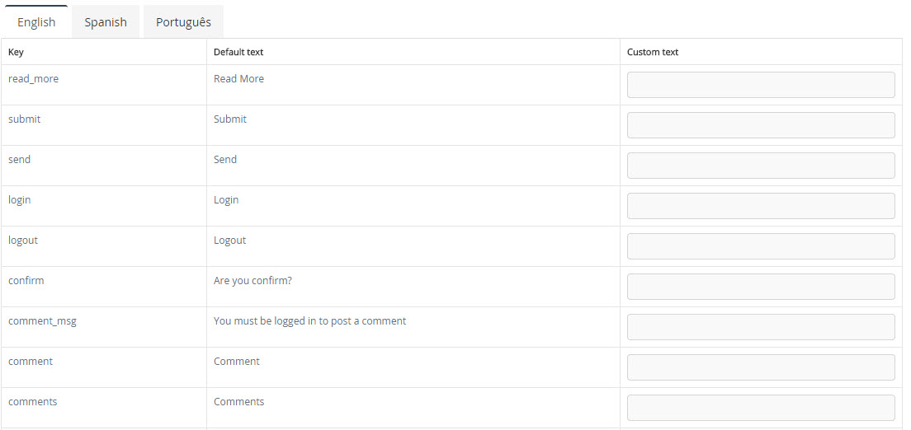

|  |
After activating the plugin, select the link "Settings / Configuración" to edit the characteristics of the plugin.
|
|  |
Custom Translations, allows you to translate a group of words in any language that is defined in the module
Languages , if for example we defined 2 English and Spanish languages, then we will have
two tabs to translate, if the module Languages have three English, Spanish and Portuguese languages,
then we have three tabs translate.
|
|  |
Custom Translations has three columns the first is Key , which is the key word or phrase to be translated,
the second column is Default text , here you have the default translation the third column has
Custom text , you can enter here the word to translate, then enter the words to be translated is come to
save changes by clicking on the button Submit/Send .
|